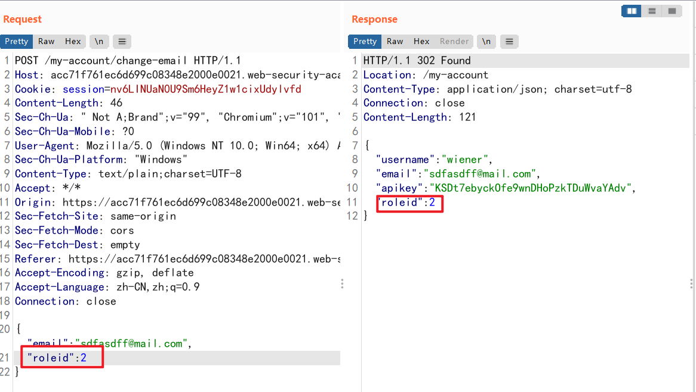

通过访问控制漏洞可以达到权限提升的目的💪
简介
什么是访问控制
拆分成2块，访问和控制。访问就是谁访问，访问什么东西；控制就是决定这个人是否能够访问这个东西。专业术语就是：访问者向受保护资源进行访问操作的控制管理。该控制管理保证被授权者可访问受保护资源，未被授权者不能访问受保护资源。
是谁访问，访问什么东西，是否能够访问——>访问控制，因此也可以理解访问控制依赖于身份认证和会话管理
- 身份认证：确定访问者的真正身份
- 会话管理：确定用户发出的一系列 HTTP 请求(也就是用户所要访问的东西)
- 访问控制：确定用户是否能够执行他们的这种操作(也就是用户是否能够访问他们所想要的内容)
访问控制的分类
- 垂直访问控制：控制不同权限等级的用户能够访问应用程序不同的功能。例如：管理员可能能够修改或删除任何用户的帐户，而普通用户无权访问这些操作。
- 水平访问控制：控制用户只能访问自己所被允许的资源而无法访问相同权限等级下其他用户的资源。例如：银行应用程序将允许用户查看交易并从他们自己的账户进行支付，但不允许任何其他用户的账户。
- 上下文相关的访问控制：根据应用程序的状态或用户与应用程序的交互来限制对功能和资源的访问，可防止用户以错误的顺序执行操作。例如，零售网站可能会阻止用户在付款后修改其购物车的内容。
访问控制漏洞的影响
访问控制漏洞就意味着访问控制有着会被破坏的可能，那用户就可以访问到一些不被允许的内容以及执行不在他们权限之内的操作。
简单来说，访问控制漏洞可能会导致权限提升
靶场
未受保护的功能导致纵向提权
对一些敏感功能没有进行保护，敏感功能的 URL 在其他位置被公开或者能够对其进行暴力破解，敏感功能页面能够通过 URL 被任何人所访问。
-
易发现、简单的 URL
通过访问 /robots.txt 发现管理员页面的存在
通过 URL 访问管理员界面
-
JS泄露 URL
虽然敏感功能界面的 URL 进行了一定的隐藏处理，例如加上一些杂乱的字符
1
https://insecure-website.com/administrator-panel-yb556
这会让我们难以猜测到它，但是可能这些 URL 会在 JavaScript 中暴露出来。
进入靶场，右键访问源代码或者通过 bp 查看 response
之后通过 URL 访问便可
基于参数的控制访问
服务器在用户登录时确定用户身份后，将表明用户身份的信息储存在一些用户可以控制的地方，例如：隐藏字段、cookie 或预设的查询字符串参数。都说是用户可控制的地方了，那就意味着我们可以对这些信息进行随意的更改，那么就可以进行权限提升了。
-
使用 cookie 鉴别用户身份
该靶场使用 cookie 中的值来确定是否为管理员的身份
可以使用 bp 的修改请求头部功能，bp会将每一个请求中的 cookie 的 false 改成 true
或者在操作界面对每个请求进行拦截，将 false 改成 true
-
利用用户配置属性判断用户身份
在靶场中的更改邮箱处，查看服务器回显，利用 roleid 鉴别用户身份
在 JSON 中添加该属性，服务器回显为 2

访问 /admin 页面即可
平台的错误配置导致控制访问失效
-
通过 URL 绕过访问控制
服务器辨别用户所请求的内容依靠的是 http 请求的请求行中的 URL，而 http 请求的请求头中有个
X-Original-URL 或 X-Rewrite-URL属性能够覆盖掉请求行中 URL 的路径。当 get 请求的请求行中的 URL 为空时，我们所请求的 URL 就会被 X-Original-URL 的值所替代
图中的属性值仅用于测试服务器是否支持 X-Original-URL 标头，如果服务器不支持那通过这个方法尝试绕过服务器的限制就不太行了。
返回响应是 “not found” 说明服务器尝试返回 URL 为 /abdb 的页面，只是该页面不存在，那也就说明这个服务器是支持该标头的。
尝试绕过服务器限制，访问 /admin 界面成功
通过 URL 传参删除目标用户
总结一下该题目就是
-
通过请求方式绕过访问控制
当服务器对于用户所请求的界面进行限制时可能出现纰漏，仅仅对某一种请求方式进行了限制，因此我们可以使用其他请求方式对控制访问进行绕过。
使用 administrator 账户熟悉提升用户权限所需的 URL 以及请求包体中的参数
当我们使用 wiener 身份进行访问时会放回如下界面，服务器告诉我们未授权
对请求方式进行修改，并对自己的账户进行权限提升
使用 get 方式成功绕过服务器限制~
横向提权
横向提权和水平访问控制挂钩，当水平访问控制机制得到破坏时就会导致横向提权，简单来说就是你能够访问和你权限同级别的其他用户的账户。例如：如果一个员工应该只能访问自己的就业和工资记录，但实际上也可以访问其他员工的记录，那么这就是横向权限。
-
请求参数决定所访问的账户
服务器依靠 URL 中的参数判断所请求的账户界面
那么对参数进行修改便是
-
通过 GUID 识别用户
服务器使用 GUID 来标识用户，GUID 就是全局唯一标识符，我们无法对一个用户的 GUID 进行猜测或者预测，但是系统可能将 GUID 在某些地方泄露，例如：用户消息或评论处。
观察所给账户的 URL，发现使用一堆乱辨别用户
发现在 blog 中系统暴露了用户的 GUID
获取目标用户 ID 并修改 URL 参数
-
页面重定向时的数据泄露
发现账户依旧使用 URL 中的参数来确定所请求的用户
尝试修改 id 的值，发现直接被重定向至 /login 界面
观察 bp HTTP history ，发现在重定向过程中有数据泄露
横向提权到纵向提权
在某些情况下，攻击者可以通过利用横向提权进行纵向提权。例如：攻击者通过横向提权获得管理员的密码并破坏了他的账户，并使自己获得管理访问权限，那么攻击者的执行权限得到了扩大从而纵向提权。
-
密码泄露造成纵向提权
首先该靶场存在横向提权漏洞，所请求的账户页面由 URL 中的参数所决定
而在该页面中存在着密码泄露
修改 URL 参数，并查 administrator 账户密码
-
不安全的直接对象引用(IDOR)
什么是 IDOR：是数字安全中的一种访问控制 漏洞。[1]
当Web 应用程序或应用程序编程接口使用标识符直接访问内部数据库中的对象但不检查访问控制或身份验证时，就会发生这种情况。例如，如果发送到网站的请求URL直接使用易于枚举的唯一标识符（例如
http://foo.com/doc/1234），则可能会提供对所有记录的意外访问的利用。我也不太懂这题为什么和 IDOR 搭边，应该是对 /download-transcript/1.txt 进行访问时没有进行身份认证吧。
view transcript 发现序号从2开始递增，修改 get 请求中的参数，获得密码。
多步骤流程中的访问控制
一些网站通过一系列步骤实现重要功能，但在多步骤的情况下，一些网站可能只对其中的一些步骤进行了严格访问控制而忽略了其他。
例如：
更新用户详细信息的管理功能可能涉及以下步骤：
- 加载包含特定用户详细信息的表单。
- 提交更改。
- 查看更改并确认。
假设访问控制正确应用于第一步和第二步，但没有应用于第三步。实际上，网站假设用户只有在已经完成了正确控制的第一步后才能到达第三步。在这里，攻击者可以通过跳过前两个步骤并直接提交带有所需参数的第三步请求来获得对该功能的未经授权的访问。
-
多步流程中控制访问缺失
观察 administrator 的升级权限的过程，我们可以发现有如下步骤：点击 upgrade——>询问是否确定进行 upgrade——>提交最终结果
而漏洞也就产生于最后结果的提交，服务器对于这个步骤缺少了访问控制，那么思路也就很明显了：
利用 wiener 账户伪造一个最终提交结果即可
基于 Referer 的访问控制
什么是 Referer：HTTP 请求头中的一个信息字段，表示当前页面是通过此来源页面里的链接进入的，用于识别访问来源。通俗一点讲就是，告诉服务器是哪个网页指引你过来的。
某些应用程序可能对于主管页面有良好的访问控制机制，但对于一些子页面有访问控制的缺失，例如对于子页面的请求中只要包含有正确的 referer 那这个请求就可以被允许。在这种情况下，我们可以对 referer 字段进行伪造并获得访问。
-
基于 Referer 的控制访问
在更改权限的功能中，网页使用 get 请求来向服务器发送更改权限的信息
其中的 referer 表明是从 /admin 页面发起的这个请求，那也就是说服务器依靠这个 referer 认为你是有更改权限权利的管理员。
对 wiener 账户的 get 请求进行伪造并发包即可
基于位置的控制访问
一些网站根据用户的地理为位置对资源实施访问控制。但是这些访问控制通常可以通过使用网络代理、VPN 或操控客户端地理定位机制来绕过。
如何防止访问控制漏洞
访问控制漏洞通常可以通过采取深度防御方法并应用以下原则来预防：
- 永远不要仅仅依靠混淆来进行访问控制
- 对于非公开的资源默认为拒绝访问
- 尽可能使用的单一的应用程序范围的机制来实施访问控制
- 在开发时，强制声明每个资源允许的访问控制权限，并默认拒绝访问
- 彻底审核和测试访问控制机制，并确保它们按所设计的工作
本文作者：GhDemi
文章默认使用 CC BY-NC-SA 4.0 协议进行许可，使用时请注意遵守协议。